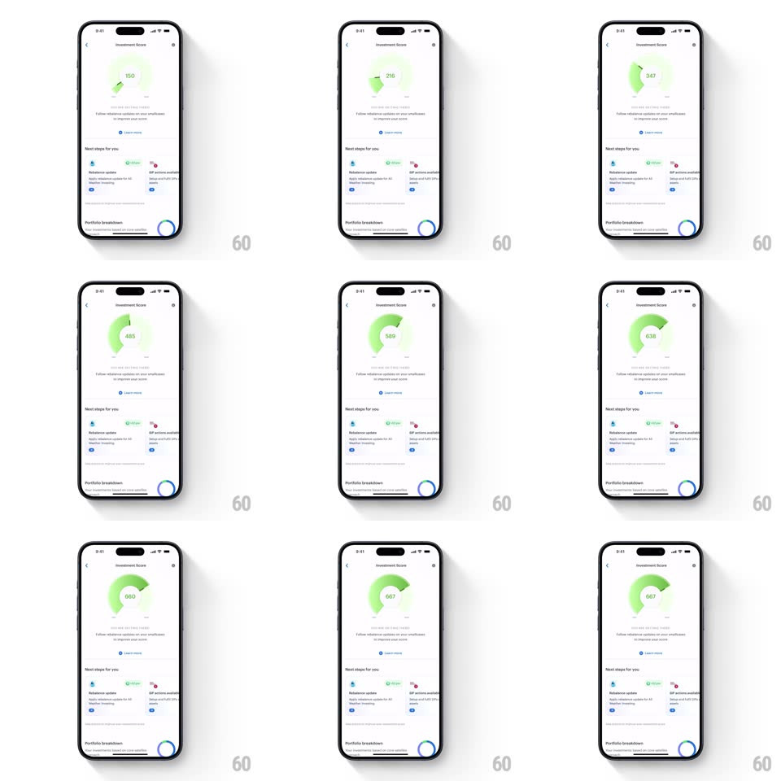

Media
Frame-by-frame

Rebuild this animation 1:1: Smallcase's investment score meter - a semicircular gauge whose needle sweeps and arc fills green while the score counts up to its improved value.

Rebuild this animation 1:1: Smallcase's investment score meter - a semicircular gauge whose needle sweeps and arc fills green while the score counts up to its improved value. ## Integration Integration: stack-agnostic spec - springs given as stiffness/damping, timed motions as duration + curve; map every value to your framework and animation library of choice. ## Scene A white "Investment Score" page: a semicircular gauge (pale gray track, needle, min-max labels) with the big score number in its center and a caption beneath. Below: a "Next steps for you" checklist with toggles and a "Portfolio breakdown" donut chart card. ## Motion spec Pattern: gauge sweep + count-up. - Entry: the page elements stagger in (translateY 12px, 250ms, 80ms apart), gauge first. - The gauge animates from the old score to the new: the needle sweeps along the arc (1.2s, ease-out with a slight overshoot past the target, then settle, spring ~260/20), the arc fills behind it from pale gray to lime green to saturated green as the value climbs through ranges, and the number counts up in sync (1.2s, ease-out; digit roll, not crossfade). - Range color stops: low scores read pale yellow-green, mid lime, high saturated green - the fill color interpolates with the sweep position. - Landing: a soft tick haptic and the caption under the score crossfades to the improved-state copy (250ms). - The checklist rows toggle with a pill switch animation (200ms) and the donut chart sweeps its segments in (stroke-arc draw, 600ms, staggered 150ms) when scrolled into view. ## Calibration - Count-up and needle sweep must stay locked together - the number under the needle is always the needle's value. - The overshoot is small (~3% of range); this is a gauge, not a prize wheel. ## Reduced motion Gauge jumps to final value with a fade; no count-up. ## Don't miss - The gauge track is a thin arc with tick-free minimal labeling; the number inside is the largest type on the page. - Green is earned: the arc only reaches saturated green at high scores.